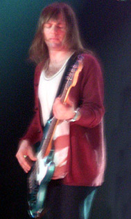

Es una banda de pop rock estadounidense de Los Ángeles, California. El grupo se formó originalmente entre 1994 y 1995 como Kara’s Flowers, mientras sus integrantes cursaban la secundaria. Adam Levine, Jesse Carmichael, Mickey Madden y Ryan Dusick firmaron con Reprise Records y lanzaron un álbum, The Fourth World, en 1997. Después de una respuesta indiferente al álbum, la banda se separó de su sello discográfico y siguieron con sus carreras académicas en la universidad. En 2001, la banda se reagrupó, añadió a James Valentine a la agrupación, y siguió una nueva dirección bajo el nombre de Maroon 5.
Más Populares
- Red Pill Blues
- V
- Overexposed
- Hands All Over
- It Won't Be Soon Before Long
- Songs About Jane


Mejores temas
- Memories
- Girls like you (feat. Cardi B)
- She will be loved - Radio Mix
- Sugar
- What Lovers Do (feat. SZA)